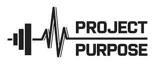

Requirements
User Managementn
Users can create accounts and log in securely
Implement password recovery mechanisms
Task Scheduling
Automated Task Entry: Allow manual task entry or automatic entry based on user behavior or external integrations.
Prioritization and Categories: Users can prioritize tasks and assign them to categories or projects.
Dependency Management: Users can define dependencies between tasks and visualize task dependencies.
Calendar Integration: Integrate with external calendars to sync tasks and events.
Goal Tracking
Goal Creation: Users can set short-term and long-term goals with clear objectives
Progress Tracking: Visual indicators and progress bars to show user advancement towards goals.
Users can update and mark goal milestones.
Reminder and Notifications: Reminders and notifications for upcoming goal deadlines or milestones
Productivity Insights
Data Analytics: Implement data analytics to gather insights on user behavior, task completion times, and goal achievements
Personalized Recommendations: Machine learning algorithms provide personalized recommendations for improving productivity.
Visual Reports: Generate visual reports and charts to help users understand productivity patterns.
User Interface and Experience
Intuitive Design: Design an intuitive and user-friendly interface with easy navigation.
Customization: Users can customize the look and feel of the Personal Planner, including themes and layouts.
Task Drag-and-Drop: Enable users to rearrange and prioritize tasks through drag-and-drop.
Security and Privacy
Data Encryption: Implement end-to-end encryption to secure user data.
User Privacy Settings: Allow users to control privacy settings, deciding what information is shared.
Testing and Quality Assurance
Test Automation: Develop automated testing scripts for critical functionalities.
User Acceptance Testing (UAT): Conduct thorough UAT to validate that the Personal Planner meets user expectations.
User Training and Support
Onboarding Process: Develop an onboarding process to guide new users through features.
User Documentation: Provide comprehensive user documentation, tutorials, and FAQs.
Customer Support: Establish channels for user support, including email, chat, or a helpdesk system.
Continuous Improvement
Feedback Mechanism: Implement mechanisms for users to provide feedback within the application. Regularly collect and analyze user feedback for continuous improvement.
Iterative Development: Plan for iterative releases, incorporating user feedback and adding new features or enhancements.
Project Purpose
The purpose of the Personal Planner project is to design and develop an advanced personal planning tool that empowers users to enhance their productivity, achieve personal and professional goals, and gain valuable insights into their daily activities. This comprehensive tool is envisioned to be a user-centric solution, offering automated task scheduling, goal tracking, and personalized productivity insights tailored to individual preferences.
Key Aspects
Automation and Efficiency: Implement intelligent task scheduling to automate routine activities, allowing users to focus on high-priority tasks.
Goal Realization: Facilitate effective goal setting, tracking, and visualization, fostering a sense of accomplishment and motivation.
Personalized Productivity Insights: Leverage data analytics and machine learning to provide users with tailored insights, enabling continuous improvement in productivity habits.
Seamless Cross-Platform Experience: Ensure a consistent and user-friendly experience across various platforms, including web browsers, mobile devices, and potentially desktop applications.
User Customization and Collaboration: Allow users to personalize their planning experience through customization options and encourage collaboration by integrating with external tools.
Security and Privacy: Prioritize data security with end-to-end encryption and robust privacy controls to instill user trust and confidence.
Continuous Improvement: Establish a feedback loop for user input, fostering iterative development and ensuring the Personal Planner evolves in response to user needs.
Outcome: The Personal Planner aspires to be a comprehensive, user-centric solution that transforms the way individuals organize, plan, and achieve their tasks and goals, contributing to a more productive and fulfilling daily life.

Technologies Used
The selection of technologies for the Personal Planner project depends on various factors such as the project's scope, target platforms, scalability requirements, and the development team's expertise. Below is a generalized list of technologies that could be considered for different components of the Personal Planner:
Frontend Development
Web Frontend
JavaScript Framework/Library: React.js, Angular, or Vue.js for building a responsive and interactive user interface.
Styling: CSS pre-processors like Sass or Less for styling consistency.
Mobile Frontend (if applicable)
React Native or Flutter: For cross-platform mobile app development.
Swift (iOS) and Kotlin (Android): For native mobile app development.
Desktop Frontend (if applicable)
Electron: For building cross-platform desktop applications.
Backend Development
Server-Side Language: Node.js, Python (Django or Flask), Ruby (Ruby on Rails), or Java: Depending on the team's proficiency and preferences.
Database
Relational Database: MySQL, PostgreSQL, or SQLite for structured data.
NoSQL Database: MongoDB or Cassandra for flexibility with unstructured data.
APIs
RESTful API or GraphQL: Design and implement APIs for communication between the frontend and backend.
Security
Authentication and Authorization: JWT (JSON Web Tokens) or OAuth 2.0: Implement secure user authentication and authorization.
SSL/TLS: Ensure secure communication over the network.
Data Analytics and Machine Learning (if applicable)
Data Analytics: Python (Pandas, NumPy): Analyze user behavior and generate insights.
Machine Learning
Scikit-learn, TensorFlow, or PyTorch: Develop algorithms for personalized recommendations.
Collaboration and Communication
Real-Time Communication (if applicable): WebSocket: Implement real-time features for collaboration.
Version Control and Documentation
Version Control: Git. Manage source code and collaborate with a distributed team.
Documentation
Swagger/OpenAPI: Document APIs.
Markdown or a documentation tool: Create comprehensive project documentation
Project Management and Communication
Project Management: Jira, Trello, or Asana: Track and manage project tasks
Communication: Slack, Microsoft Teams, or Discord: Facilitate team communication.
Testing
Jest, Mocha, or Jasmine: For unit testing.
Postman or Insomnia: For API testing.
Monitoring
Prometheus and Grafana: Monitor application performance.
Other Considerations
Development Environment: Visual Studio Code, IntelliJ IDEA, or PyCharm: IDEs for development.
Cross-Browser Compatibility: BrowserStack or Selenium: Ensure compatibility across different web browsers.
It's important to note that the specific technologies chosen can be tailored based on the development team's expertise, project requirements, and any existing technology stack within the organization. Additionally, emerging technologies or advancements in existing ones may influence the technology choices during the development lifecycle.
Design Architecture
Designing the architecture for the Personal Planner involves defining the structure of the application, including how its components interact with each other to achieve the desired functionalities. Below is a generalized design architecture for the Personal Planner.
High-Level Architecture
Client-Side (Frontend)
Web Application: Implemented using a modern JavaScript framework/library like React.js for a responsive and dynamic user interface.
Mobile Application (Optional): Developed using React Native or another cross-platform framework.
Desktop Application (Optional): Built using Electron for cross-platform compatibility.
Server-Side (Backend)
Server: Implemented using Node.js, Python (Django or Flask), Ruby (Ruby on Rails), or Java based on the team's expertise.
Database: A combination of a relational database (e.g., PostgreSQL) for structured data (user accounts, tasks) and a NoSQL database (e.g., MongoDB) for flexibility with unstructured data.
API Layer
RESTful API or GraphQL: For communication between the frontend and backend.
Authentication and Authorization: Implement JWT or OAuth 2.0 for secure user authentication and authorization.
Cloud Services
Hosting: Utilize cloud platforms like AWS, Azure, or GCP for scalable and reliable hosting.
Containerization: Use Docker for containerization to ensure consistent deployment across different environments.
Container Orchestration (Optional): Implement Kubernetes for managing and orchestrating containerized applications.
Core Components
Task Management Module:
Responsible for managing tasks, including creation, editing, deletion, and prioritization.
Incorporates automation for intelligent task scheduling.
Goal Tracking Module
Facilitates goal setting, tracking, and visualization.
Includes progress indicators, milestone tracking, and motivational reminders.
Productivity Insights Module
Implements data analytics to generate personalized productivity insights.
Utilizes machine learning algorithms for recommending productivity improvements.
User Customization Module
Allows users to customize the look and feel of the application, including themes and layout preferences.
Additional Components
Integration Module: Enables integration with external calendars, project management tools, and other productivity services for enhanced collaboration.
Real-Time Communication (Optional): Implements WebSocket or another real-time communication mechanism for collaborative features.
Security and Privacy
Security Layer
ncorporates SSL/TLS for secure communication over the network.
Implements end-to-end encryption to safeguard user data.
Development and Deployment
Version Control and CI/CD
Utilizes Git for version control.
Implements CI/CD tools like Jenkins, GitLab CI/CD, or GitHub Actions for automated testing and deployment.
Monitoring and Documentation
Monitoring and Analytics: Uses Prometheus and Grafana for monitoring application performance. Includes analytics tools for tracking user behavior.
Documentation Layer: Utilizes Swagger/OpenAPI for API documentation. Maintains comprehensive project documentation using Markdown or a documentation tool.
Collaboration and Communication
Collaboration Tools: Integrates with communication tools such as Slack, Microsoft Teams, or Discord for team collaboration.
Testing Frameworks
Implements testing frameworks like Jest, Mocha, or Jasmine for unit testing.
Utilizes Postman or Insomnia for API testing.
Considerations
Development Environment: Recommends Visual Studio Code, IntelliJ IDEA, or PyCharm as preferred IDEs for development.
Cross-Browser Compatibility: Ensures cross-browser compatibility using tools like BrowserStack or Selenium.
Diagram
The architecture can be visualized with a high-level diagram illustrating the relationships between components, data flow, and external integrations. However, specific details may vary based on the evolving needs of the project and the development team's preferences. This architecture is a starting point, and adjustments may be made based on the project's unique requirements, scalability considerations, and emerging technologies. It's also essential to conduct regular architecture reviews and iterations as the project progresses.
Implementation Details
Implementation details for the Personal Planner project involve breaking down the development process into actionable steps. Below, I outline key implementation details for various components and modules:
Client-Side (Frontend)
Web Application: React.js Implementation
Set up a React.js project structure using tools like Create React App.
Develop components for different views (task management, goal tracking, insights, customization).
Implement state management using Redux for handling complex application states.
Integrate third-party libraries for UI components or styling (e.g., Material-UI, styled-components).
Mobile Application: React Native or Flutter Implementation (Optional)
Create a cross-platform mobile application using React Native or Flutter.
Ensure a consistent user experience across iOS and Android platforms.
Optimize UI components for mobile devices and touch interactions.
Desktop Application (Optional): Electron Implementation
Adapt the React.js components for use in an Electron application.
Utilize Electron APIs for accessing native desktop features.
Ensure cross-platform compatibility and responsiveness.
Server-Side (Backend)
Server: Node.js Implementation
Set up a Node.js server using a framework like Express.
Define routes for handling different API endpoints.
Connect to the MongoDB database for storing user data.
Database: MongoDB (NoSQL) Implementation. PostgreSQL (Optional - Relational Database) Implementation
Create MongoDB schemas for user accounts, tasks, goals, and customization settings.
Implement CRUD operations for interacting with the database.
Ensure data integrity and consistency.
If using PostgreSQL, design relational tables for structured data.
Implement SQL queries for efficient data retrieval and manipulation.
API Layer: RESTful API or GraphQL Implementation
Define RESTful API endpoints or GraphQL schema for communication with the frontend.
Implement user authentication and authorization using JWT.
Handle requests and responses with appropriate status codes.
Core Components
Task Management Module: Task CRUD Operations. Intelligent Task Scheduling
Implement functionalities for creating, updating, and deleting tasks.
Develop prioritization mechanisms and sorting options.
Implement algorithms for intelligent task scheduling based on priority, deadlines, and historical behavior.
Goal Tracking Module: Goal CRUD Operations
Create endpoints for goal creation, updating, and deletion.
Develop progress tracking features and milestone handling.
Productivity Insights Module: Data Analytics. Machine Learning Recommendations
Set up analytics tools for tracking user behavior and collecting data.
Implement data analysis algorithms to generate insights.
Train machine learning models on user data for personalized productivity recommendations.
User Customization Module: Theme and Layout Customization
Implement features allowing users to customize themes, colors, and layout preferences.
Save user customization settings in the database.
Additional Components
Integration Module: External Integrations
Set up API integrations with external calendars, project management tools, or productivity services.
Ensure seamless data synchronization.
Real-Time Communication (Optional): WebSocket Implementation
Integrate WebSocket for real-time collaboration features.
Implement features like shared task lists or collaborative goal planning.
Security and Privacy
SSL/TLS Implementation
Ensure secure communication over the network using SSL/TLS.
Implement secure handling of user data during transmission.
End-to-End Encryption
Implement end-to-end encryption for safeguarding user data in transit and at rest.
Development and Deployment
Version Control and CI/CD
Use Git for version control, maintaining a clear commit history.
Set up Jenkins, GitLab CI/CD, or GitHub Actions for automated testing and deployment.
Monitoring and Analytics
Monitoring
Implement tools like Prometheus and Grafana for monitoring application performance.
Set up alerts for critical system metrics.
Analytics Integration
Integrate analytics tools for tracking user interactions and generating reports.
Documentation Layer
API Documentation
Use Swagger/OpenAPI for documenting API endpoints.
Maintain up-to-date documentation for developers and stakeholders.
Collaboration and Communication
Integration with Collaboration Tools
Connect with collaboration tools like Slack, Microsoft Teams, or Discord for team communication and updates.
Testing
Unit Testing
Implement unit tests for critical components using frameworks like Jest, Mocha, or Jasmine.
Conduct thorough testing for each module to ensure functionality and reliability.
API Testing
Use tools like Postman or Insomnia for API testing, checking various scenarios and edge cases.
Development Environment
IDE Setup
Developers use preferred IDEs (Visual Studio Code, IntelliJ IDEA, PyCharm) with relevant extensions for ease of development.
Cross-Browser Compatibility
Testing Tools
Utilize BrowserStack or Selenium for thorough testing across different web browsers.
User Training and Support
Onboarding Process
Develop an onboarding process to guide new users through the application's features.
Provide tooltips or guides for first-time users.
User Documentation
Maintain comprehensive user documentation, tutorials, and FAQs for self-help.
Continuous Improvement
Feedback Mechanism
Implement mechanisms within the application for users to provide feedback.
Regularly collect and analyze user feedback for continuous improvement.
Iterative Development
Plan for iterative releases, incorporating user feedback and adding new features or enhancements.
These implementation details provide a roadmap for the development team, guiding them through the process of building the Personal Planner application. The specifics may be adjusted based on project requirements, feedback, and emerging technologies. Regular testing, monitoring, and user feedback are essential for ensuring the success and continuous improvement of the application.
Testing
Testing a personal planners program involves ensuring that the software meets the requirements, functions correctly, and provides a positive user experience. Here's a testing plan for a personal planners program.
Requirements Testing
Objective: Ensure that the software meets specified requirements.
Verify that each feature and functionality aligns with the defined requirements.
User Interface Testing
Objective: Validate the usability and aesthetics of the user interface.
Check the layout, design, and responsiveness across various devices.
Confirm that navigation is intuitive and user-friendly.
Functionality Testing
Objective: Verify that all features work as intended.
Test creating, editing, and deleting tasks and events.
Validate the functionality of reminders and notifications.
Data Management Testing
Objective: Ensure accurate storage, retrieval, and manipulation of user data.
Test saving and loading planner data.
Check for data consistency and integrity.
Compatibility Testing
Objective: Verify compatibility with different devices and platforms.
Test the planner on various operating systems (Windows, macOS, Linux) and browsers.
Ensure a seamless experience across different screen sizes.
Integration Testing
Objective: Validate interactions between different modules.
Test the integration of the planner with external calendars or task management tools.
Check for proper synchronization of data across platforms.
Performance Testing
Objective: Assess the software's responsiveness and resource usage.
Test the speed of loading, creating, and updating events with various data sizes.
Check how the application performs under different levels of user activity.
Security Testing
Objective: Identify and address potential security vulnerabilities.
Ensure secure transmission of data (SSL/TLS).
Validate user authentication and authorization mechanisms.
Usability and Accessibility Testing
Objective: Evaluate the program's ease of use and accessibility features.
Conduct usability testing with potential users.
Verify compliance with accessibility standards (WCAG).
Localization Testing
Objective: Confirm the software works correctly in different languages and regions.
Test the planner with different language settings.
Ensure date and time formats adapt to regional preferences.
Backup and Recovery Testing
Objective: Assess the system's ability to recover from data loss.
Test data backup and restoration processes.
Ensure users can recover their data in case of accidental deletion or system failure.
Cross-Browser Testing
Objective: Confirm compatibility with various web browsers.
Test the planner on popular browsers like Chrome, Firefox, Safari, and Edge.
Mobile App Testing (if applicable)
Objective: Ensure functionality on mobile devices.
Test the planner on different mobile platforms (iOS, Android).
Verify responsiveness and navigation on various screen sizes.
Documentation Review
Objective: Ensure that user documentation is accurate and helpful.
Review user guides, FAQs, and any other documentation provided
User Acceptance Testing (UAT)
Objective: Obtain feedback from actual users.
Conduct UAT sessions with real users to identify any issues or improvements.
Regression Testing
Objective: Ensure that new updates do not break existing functionality.
Run regression tests after each software update or modification.
Continuous Testing
Objective: Integrate testing into the development pipeline.
Implement continuous integration and automated testing practices.
Feedback Mechanism
Objective: Provide a way for users to submit feedback.
Implement a feedback form or mechanism within the application.
Performance Monitoring
Objective: Implement tools to monitor the application's performance in real-time.
Set up alerts for performance issues that may arise.
Scalability Testing
Objective: Assess the system's ability to handle an increasing number of users and data.
Test the planner's performance under high user loads.
Remember, testing is an iterative process, and continuous improvement is essential. Regularly update and expand your test suite as the software evolves.